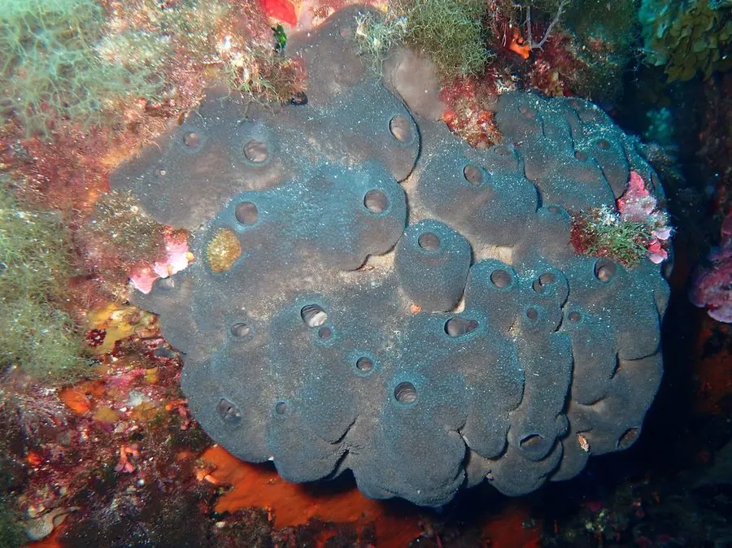

其他无脊椎动物 · 动物界
沐浴角骨海绵 Spongia officinalis

骨架由海绵丝和角骨针构成、柔软吸水的沐浴海绵，曾长期作为洗浴清洁工具，在地中海被大量采捞。
- 分类
- 门多孔动物门纲寻常海绵纲目网角海绵目科角骨海绵科属角骨海绵属
- 栖息环境
- 地中海与东大西洋的岩礁海底，常附于岩石阴暗处
- 地理分布
- 地中海及邻近大西洋海域，如爱琴海和北非沿岸
- 保护级别
- 暂无评估；天然海绵采集已大幅减少
物种志
沐浴角骨海绵的群体呈团块状或半球形，直径 10–30 cm，体表有较大的出水孔。体内由角骨海绵丝构成弹性网状骨架，夹杂少量硅质骨针；活体呈黑褐、灰褐或深褐色，干燥漂白后变成米黄色。
它固着在岩礁海底生活，没有神经系统和器官，靠领细胞鞭毛带动水流，滤食海水中的细菌和有机微粒，有净化海水的作用，也为小型生物提供栖息空间。海绵可行有性繁殖，也能通过出芽和断裂进行无性繁殖，幼体浮游一段时间后附着定居。沐浴角骨海绵分布于地中海及邻近大西洋海域，如爱琴海和北非沿岸，其弹性骨架干燥后就是天然浴海绵，采集业曾十分兴盛；1980 年代地中海暴发的海绵病害重创了这一产业，如今天然海绵采集已大幅减少。
形态与习性
- 食性滤食海水中细菌和有机微粒
- 体型群体直径约 10–30 cm
- 结构海绵丝与骨针构成弹性骨架，吸水柔软
- 繁殖有性繁殖与出芽、断裂等无性繁殖
- 作用天然洗浴海绵原料，历史悠久的捕捞对象
- 生态滤食净化海水，为小型生物提供栖息空间
趣味知识
- 海绵没有神经和器官，却能把海水中的食物颗粒过滤下来。
- 沐浴角骨海绵的弹性骨架由海绵丝构成，干燥后就是常见的浴海绵。
- 1980 年代地中海暴发的海绵病害曾重创天然海绵采集业。